第２回で，既に Netscape Mail を使ったメールの送受信を行っていますが，ここで改めてメールについて取り上げます．なお，この講義では Netscape Mail よりも emacs 中で使用する Wanderlust の使用を推奨します．
コンピュータ（とネットワーク）を使ってコンピュータの利用者の間でメッセージの交換，すなわち手紙のやり取りを行うことができます．これを電子メール（メール，Ｅメール，e-mail） と言います．これはメッセージを書いたテキストファイルを相手に送りつける（相手のコンピュータにコピーする）メカニズムです．
手紙を出すには宛名と住所を書かなければならないのと同じように，電子メールを送る時もメッセージの宛先を指定する必要があります．この宛先をメールアドレスと言います．
みなさんも既にシステム情報学センターの利用承認書に書かれているメールアドレスを持っています．実際には以下の２つのメールアドレスを使えます．どちらを使うかは，メールの読み書きをするソフトウェアの設定に依存します．ここでは，この講義の第２回の Netscape の初期設定において E mail address として設定したシステム工学部のメールアドレス を使います．
| 所属 | メールアドレス | メールサーバー |
|---|---|---|
| システム工学部のメールアドレス | ユーザ名@sys.wakayama-u.ac.jp | mail.sys.wakayama-u.ac.jp |
| システム情報学センターのメールアドレス | ユーザ名@center.wakayama-u.ac.jp | mail.center.wakayama-u.ac.jp |
メールアドレスの "@"（アットマーク)より右側の部分 （sys.wakayama-u.ac.jp のところ）をドメイン名と言います．これは "@" より左側にある“利用者”の“住所”に相当します．jp:japan～日本の，ac:academic～学校関係の，wakayama-u～和歌山大学の，sys～システム工学部，の誰々，という具合になります．
ここのシステム（Linux 側）で使用できる電子メールを読み書きするためのソフトウェアには，以下のものがあります．
| メールの読み書きに使うソフトウェア | |
|---|---|
| mail/Mail | もっとも基本的なもの，コマンドで使用（演習室では使用できません） |
| Netscape Mail | Netscape Communicator に含まれるもの，ウィンドウで使用 |
| MH | 複数のコマンドで構成された高機能なもの |
| RMAIL | emacs に組み込まれたもの |
| mh-e | MH を emacs の中から使用するためのユーザインタフェース |
| mew | MH と互換性があり emacs の中で使えるもの |
| Wanderlust | mew と互換性があり IMAP にちゃんと対応しているもの |
| sylpeed | X Window System (GTK) に対応したもの |
この講義で使用する Wanderlust は，IMAP を使ってメッセージの管理を行う emacs 上のソフトウェアです（もちろん POP も使えますし，ニュースリーダの機能もあります）．
それでは Wanderlust を使ってみましょう．emacs を起動し，M-x wl とタイプして改行してください．
| emacs の中から Wanderlust を起動する | |
|---|---|
| M-x wl をタイプして [Enter] をタイプする． | 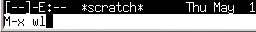 |
あるいは，emacs に "-f wl" というオプションを付けて起動すれば，emacs の起動と同時に wl を起動することができます．
| emacs の起動と同時に Wanderlust を起動する |
|---|
% emacs -f wl &[Enter] |
Wanderlust の起動途中には，バッファ内に以下のような模様が表示されます．
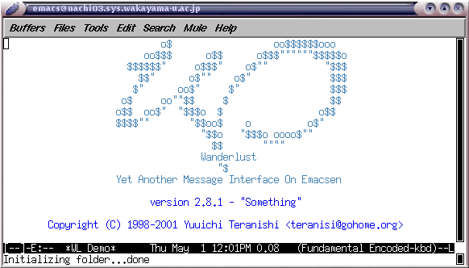
最初に Wanderlust を起動したときは，Wanderlust の動作に必要なメールフォルダやディレクトリの作成を行います．すべての質問に y（またはスペース）を答えてください．
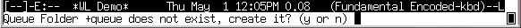
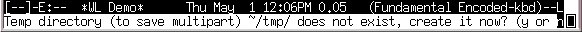
書きかけのメールは下書きフォルダに保存されます．メールを送信すると，メールは下書きフォルダから未送信フォルダに移され，送信に成功すれば未送信フォルダから取り除かれます．削除したメールはごみ箱フォルダに入ります．作業用フォルダの作成に成功し，Wanderlust が正常に起動すると，次のような画面になります．
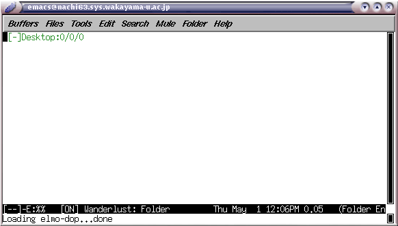
では手始めに，自分宛にメールを送ってみましょう．w をタイプしてください． するとバッファのウインドウが下のように変わります．
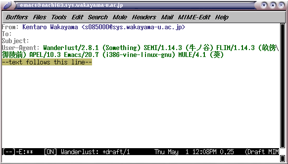
メールを送るには， この To: の欄に宛先のメールアドレス，Subject:の欄にメッセージの見出しを書きます． メールアドレスを ","（コンマ）で区切って複数書けば，同じメッセージを複数の人に送ることができます． また，To: とは別に Cc: で始まる行を設けて， そこにメールアドレスを書くこともできます （"Cc" は Carbon Copy の意味で， “カーボン紙でコピーしたものを送る”という意味です）．
では， 自分宛にメールを送るために，
と書いてください． メールアドレスには空白を入れてはいけません． ちょっと長いですが続けてタイプしてください． そのあと，--text follows this line--- の下にカーソルを移動し， メッセージの本文を書いてください．
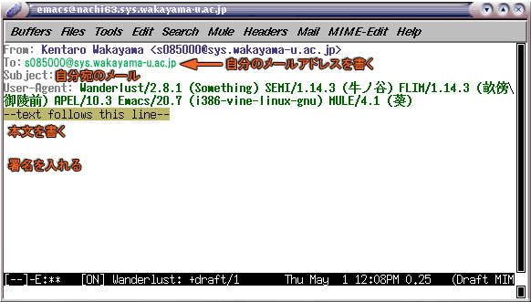
自分のメールアドレスや見出しなどを書くときには， それら以外の部分を変更しないように注意してください． 特に --text follows this line--- を変更すると， メールが送れなくなる場合があります． うっかり変更してしまった場合は， 元に戻せば大丈夫です．C-_ （[Ctrl] と [Shift] を押しながらアンダースコア(_)をタイプ）あるいは C-x u をタイプすると元に戻せます．
電子メールを書くときは， 電子メール特有の注意事項がいくつかあります．
ここまで書けたらメールを送信しましょう． C-c C-c をタイプしてください． ミニバッファに下のような表示があらわれたら， y またはスペースをタイプしてください． これで送信完了です （送信したくないときは n をタイプしてください）．
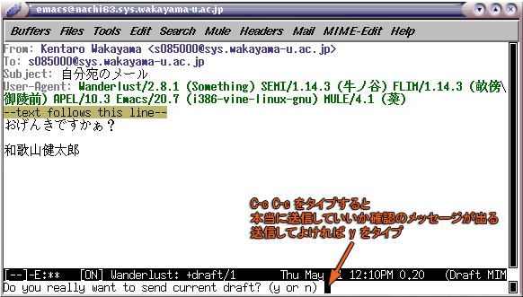
書きかけのメールの破棄書きかけのメールを出さずに破棄するには，C-c C-k をタイプしてください．ミニバッファに"Kill Current Draft? (y or n)"と表示されたら，y またはスペースをタイプしてください．また，破棄せずに emacs を終了すると，書きかけのメールは下書きフォルダ (+draft) に残されます．
では，次はあなた宛に届いたメールを読んでみましょう． 皆さん宛てのメールはこの講義の第２回でも触れたとおり，メールサーバの mail.sys.wakayama-u.ac.jp というメールサーバに届きます．Wanderlust ではメールサーバの設定は既に行われているので，その INBOX というフォルダを Wanderlust のメール受信フォルダとしで管理するようにします．
まず，カーソルを１行下に移動してください．
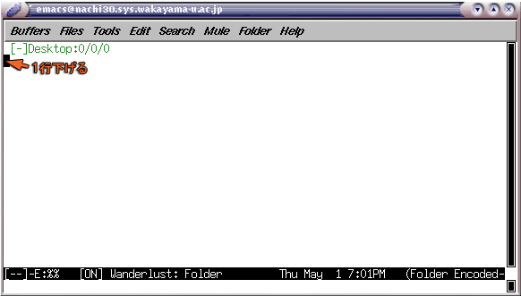
次に m a とタイプするか，M-x wl-fldmgr-add とタイプして改行します．すると，追加するフォルダを聞いてきます．ここでは mail.sys.wakayama-u.ac.jp の INBOX (%inbox) というフォルダを追加するので，単に改行してください．何も指定せずに改行すると，(～) 内の設定が採用されます．
| フォルダの指定 |
|---|
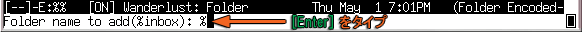 |
ここで上のようにフォルダ名を聞いてこずに Can't insert in the out of desktop group というメッセージが出たときは，カーソルを１行下に移動してから，もう一度m a とタイプするか，M-x wl-fldmgr-add とタイプして改行してください．フォルダの追加に成功すると，追加したフォルダが Desktop の下に現れます．
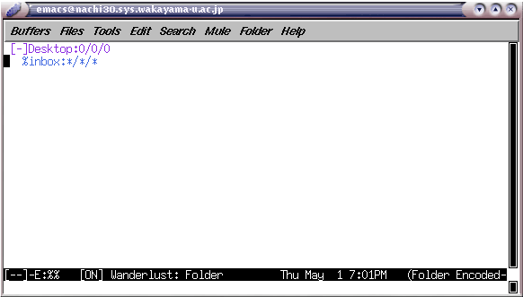
このフォルダを開くには，ここでスペースをタイプします．するとパスワードを聞いてきます．利用承認書に書かれているパスワードを入力してください．
| パスワードの入力 |
|---|
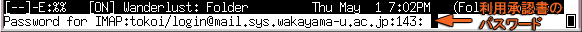 |
パスワードが正しければ受信したメールのフォルダが開いて，届いたメールの一覧が表示されます．
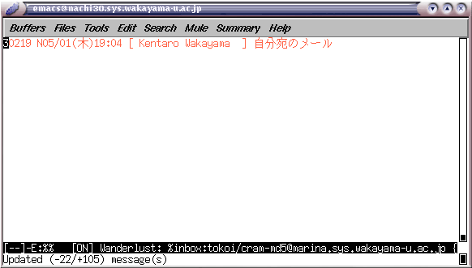
左から“メールの番号”，“日付”，“時間”，“差出人”，“見出し”が表示されます． ここでスペースをタイプすると， カーソル位置のメッセージの内容を表示します．
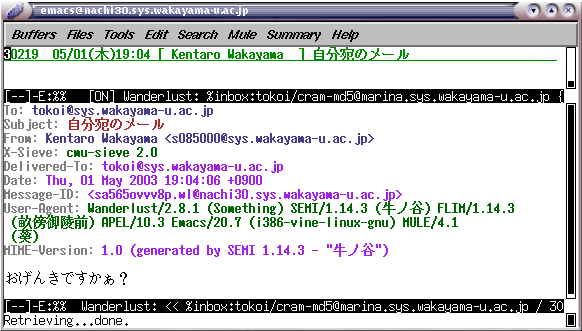
スペースで次の画面， [Backspace] で前の画面を表示します． [Enter] だと１行ずつ先に進みます．メールを最後まで読み進むと，次のメールを表示します．すぐに他のメールを読むには， n（次のメール）または p（前のメール）をタイプしてください．
送り返されてきたメールの再送出したメールが宛先の間違いや何らかのトラブルで相手に届けられなかったときは，MAILER-DAEMON からメールが送り返されてきます．これはコンピュータが自動的に発送するメールなので，このメールには返事を書かないでください．なお，送り返されてきた自分のメールを再送するには，自分のメールを読んでいる状態で M-E（この E は [Shift] を押しながら）あるいは M-x wl-summary-resend-bounced-mail を実行して，宛先などを修正した後 C-c C-c をタイプして送信してください．
それでは，自分が出したメールに返事を書いてみましょう． 自分宛に出したメールを表示させて， a をタイプしてください．
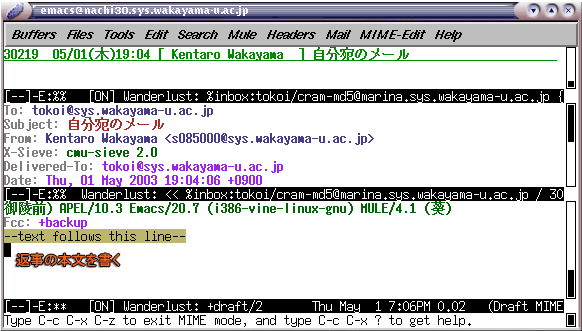
これで，メールの差出人に返事を書くことができます．試しに，自分宛てのメールに返事を書いて，送信してください．
メールの引用ところで，返事には差出人のメッセージを引用した方が， 返事を受け取った人が「はて，何の話だったっけな？」と悩まずに済みます．C-c C-y をタイプすれば，差出人のメッセージを ">" を付けて引用します（返事を書くときの a の代わりに A をタイプすると，最初から引用してくれます）．なお，引用する場合は，相手のメッセージを全部引用せず，必要部分以外は削除するようにしてください．
Wanderlust を最初に起動した時やメールの分類を行ったときには，メールのフォルダが作成されます．しかし，これらのフォルダはフォルダの一覧には表示されていません．メール受信フォルダ (%inbox) と同様に，これらをフォルダの一覧に追加するにはm a とタイプするか，M-x wl-fldmgr-add とタイプして改行します．フォルダ名を聞いてきたら，以下のようにフォルダを指定してください．
フォルダを追加する
- 下書きフォルダを追加する
- "%" を削除して，フォルダ名に +draft を指定する．
- 未送信フォルダを追加する
- "%" を削除して，フォルダ名に +queue を指定する．
- ごみ箱フォルダを追加する
- "%" を削除して，フォルダ名に +trash を指定する．
| 下書きフォルダを追加する |
|---|
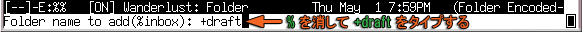 |
自分で作成したフォルダも，このようにしてフォルダ一覧に追加できます．この一覧におけるフォルダの表示名を変更するは，m p とタイプするか，M-x wl-fldmgr-set-petnameをタイプしてください（フォルダ名自体が変更されるわけではありません）．
なお，+draft フォルダに保存されている書きかけのメールは，それを表示している状態で E （[Shift] を押しながら E）をタイプすれば，もう一度編集することができます．
Wanderlust を終了するには，フォルダの一覧モードで q をタイプしてください．本当に終了するかどうか聞いてきますので， y かスペースをタイプしてください．これは emacs の中で Wanderlust を終了する （元のバッファに戻る）だけなので， 必要ならこのあと C-x C-c で emacs を終了してください．
| Wanderlust 終了の確認 |
|---|
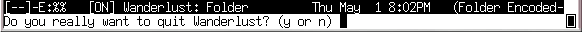 |
なお，最初に Wanderlust を使ったときや，フォルダの追加を行ったときには，終了時に次のような質問が出ます．y かスペースをタイプしてください．
| フォルダ設定の保存 |
|---|
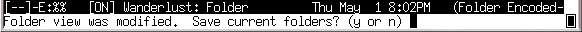 |
毎回メッセージに署名を書くのが面倒な人は， .signature というファイルに署名を書いておいてください．
| % emacs .signature[Enter] |
こうすると，emacs を使ってメールを書いているときに C-c C-w をタイプするだけで， その署名をメッセージの最後に追加してくれます．
電子メールが１対１ないし特定のグループへのメッセージの送信を行うのに対し， ネットニュースは不特定多数の相手に対してメッセージを送ります． ただし，この不特定多数というのはインターネットの利用者全員と言うわけではなく， “ある特定の分野に興味を持っている人たち”というところです． ネットニュースの利用者は， 自分が興味を持つ特定の分野に関係するメッセージを集めた “ニュースグループ” を“購読”します． そのニュースグループに送られたメッセージは “記事” と呼ばれます．また，ニュースグループに記事を送ることを， “投稿する”と言います．ネットニュースというシステムの概要については東工大の大島芳樹先生の「ネットニュースについて」を参照してください．
ニュースグループは対象とする話題や配布範囲などによって， 階層的に分類されています． ニュースグループの「最上位の分類」のことを “トップカテゴリ”と呼び， 和歌山大学で購読しているトップカテゴリには以下のようなものがあります．
| トップカテゴリ | 内容 | 言語 | 配布範囲 |
|---|---|---|---|
| comp | コンピュータ関係 | 主に英語 | 全世界 |
| news | ネットニュース関連 | 主に英語 | 全世界 |
| talk | 語り合う場？ | 主に英語 | 全世界 |
| misc | そのほか | 主に英語 | 全世界 |
| rec | 趣味 | 主に英語 | 全世界 |
| soc | 社会問題 | 主に英語 | 全世界 |
| sci | 科学一般 | 主に英語 | 全世界 |
| fj | 日本の代表的ニュースグループ | 主に日本語 | 一応全世界 |
| japan | 日本のもう一つのニュースグループ | 主に日本語 | 日本？ |
| kansai | 関西のニュースグループ | 主に日本語 | 関西？ |
| wakayama | 和歌山のニュースグループ | 主に日本語 | 和歌山市内の一部 |
| wadai | 和歌山大学 | 主に日本語 | 和歌山大学ほか |
和歌山大学のニュースグループ (wadai) のように， その機関内だけで運用されているものを“ローカルニュースグループ”と呼びます．その他のニュースグループは，複数の機関に配布されています（実は wadai も一部のほかの大学に送られています）．このように，トップカテゴリごとに配布範囲が異なります．このトップカテゴリの下に， ニュースグループが話題別に分類されています． たとえば，fj の下にはサブカテゴリとして rec があり， その下に music というサブカテゴリがあります． このニュースグループは fj.rec.music と表記され， この中に記事が置かれています． さらに，その下にもサブカテゴリがある場合があります． たとえば fj.rec.music は一つのニュースグループですが， fj.rec.music.progressive というニュースグループもあります．
ネットニュースを読むためのソフトウェアを ニュースリーダと呼びます． このコンピュータにはニュースリーダもいくつかのものが用意されています．
| ニュースリーダの種類 | |
|---|---|
| mnews | コマンドで使うニュースリーダ，わかりやすい |
| Netscape News | Netscape Communicator に含まれるニュースリーダ，ウィンドウで使用 |
| GNUS, Gnus | emacs 系エディタに組み込まれたニュースリーダ |
この講義ではGnus を使用します．
それでは Gnus を使ってみましょう．emacs を起動し，M-x gnus とタイプして改行してください．
| emacs の中から Gnus を起動する | |
|---|---|
| M-x gnus をタイプして [Enter] をタイプする． | 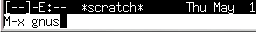 |
あるいは，emacs に "-f gnus" というオプションを付けて起動すれば，emacs の起動と同時に gnus を起動することができます．
| emacs の起動と同時に Gnus を起動する |
|---|
% emacs -f gnus &[Enter] |
Gnus の起動途中には，バッファ内に以下のような模様が表示されます．
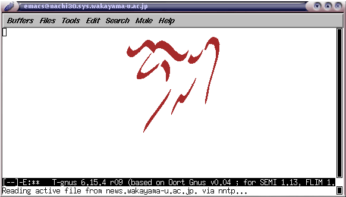
Gnus を起動すると，現在購読しているニュースグループが表示されます．最初は wadai （和歌山大学のローカルニュースグループ）が表示されていると思います．数字は，そのニュースグループに入っている未読の記事の数ですが，和歌山大学とは何の関係もない迷惑ニュース（迷惑メールのようなもの）が結構入っています．
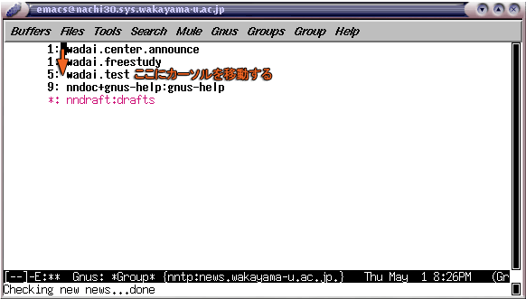
C-n または n でカーソルが下に， C-p または p でカーソルが上に動きます． カーソルを目的のニュースグループのところに移動してスペースをタイプすれば， そのニュースグループに届いた記事の一覧が表示されます． 記事を読むのをやめたり， ニュースグループの選択に戻るには q をタイプします． ニュースグループの一覧で q をタイプすると gnus は終了します． それでは，wadai.test というニュースグループの記事を読んでみましょう． ここはニュースリーダの動作テストや投稿練習に使うニュースグループです．
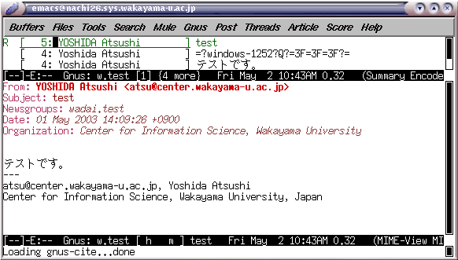
それでは， ここに記事を投稿してみましょう． aをタイプしてみてください． emacs のバッファに記事の雛形が現れますから，Wanderlust でメールを書くのと同様に，Subject: の右側に記事の題名，--text follows this line-- の下に題名（見出し）をタイプしてください．最後の署名は，.signature を作成していれば自動的に挿入されますが，入っていなければ自分でタイプしてください．
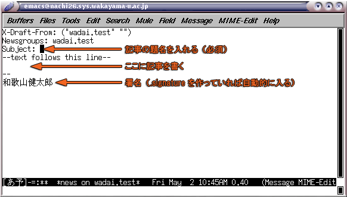
記事が書き終わったら，投稿します．C-c C-c をタイプしてください．Wanderlust のように確認のメッセージは出ませんので，本当に投稿していいかどうか，よ～く考えてからC-c C-c をタイプしてください．
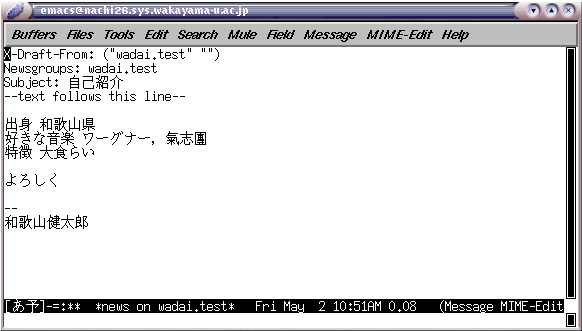
なお，最初に記事を投稿するときは，次のような問い合わせが表示されるかもしれません．その場合は単に [Enter] をタイプしてください．
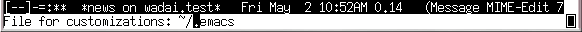
記事を投稿した直後は，ニュースリーダーには自分の記事は現れないので， 一度 q をタイプしてニュースグループの選択画面に戻ったあと， wadai.test のところで g をタイプして新着記事をチェックしてください． wadai.test の記事の数が１つ増えたことを確認したら， もう一度 wadai.test に移って自分の記事を探してみましょう． 自分の記事が見つかったら，それを表示してみてください．
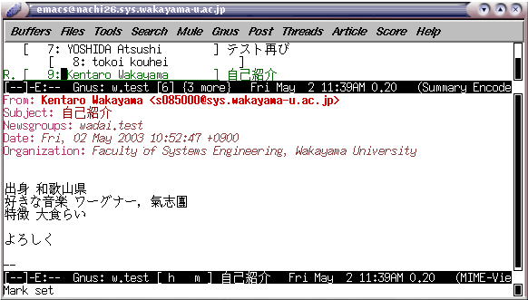
記事の投稿者に対して電子メールで返事を送ることを， 記事に “リプライする” と言います． それでは，自分の記事にリプライしてみましょう． r をタイプすると， emacs のバッファに差出人宛にメールを書くための雛形が現れます． 記事の内容を引用する場合はここで C-c C-y をタイプするか，r をタイプする代わりに R をタイプしてください．その際，不要な引用部分はできるだけ削りましょう．
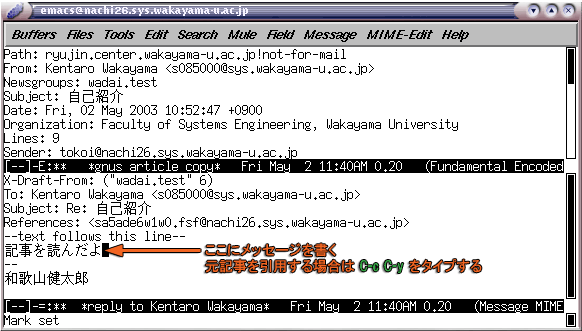
メッセージが書き終わったら， C-c C-c をタイプしてメールを送信してください．
投稿された記事に対して， メールではなく記事の形で返事を書くことを， 記事に “フォローアップ（あるいは単にフォロー）する” と言います．また，そういう記事をフォロー記事またはフォローアップ記事と言います． 今読んでいる記事にフォローするには， そこで f をタイプします． 元記事の内容を引用するなら C-c C-y をタイプするか，f をタイプする代わりに F をタイプします． このあとの手順は記事の投稿と同じです． 引用する場合は，不要な部分を削ってください． 引用している部分の行数がほかの部分より多いと， ニュースサーバは記事を受け付けてくれません．
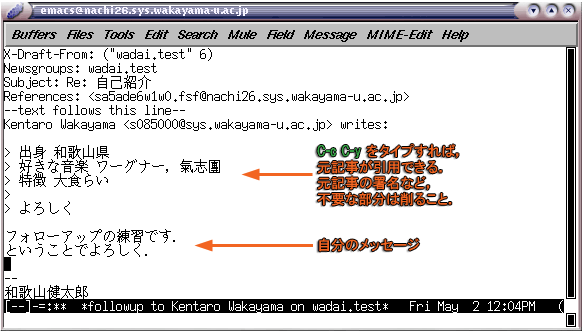
記事を間違って投稿してしまったり， 投稿した記事の内容があとから読んだら不適切だった場合には， 投稿した記事を取り消す（キャンセル） することができます． キャンセルしたい記事を表示させて， C（[Shift] を押しながら C）をタイプしてください． なお，他人の記事はキャンセルできません． また，自分の記事でも他のコンピュータから投稿した記事もキャンセルできません．
電子メールは，メッセージを書いたテキストファイルを， 相手のところに“コピー”するためのメカニズムだと説明しましたが，ネットニュースは記事を書いたテキストファイルを世界中のニュースサーバというコンピュータにばらまくメカニズムです．このため，記事を投稿してから他の機関のニュースサーバで読めるまでの間には，若干（数時間から数日）の遅れが生じます．また小さな記事でもあっても，その転送には世界中の膨大な数のコンピュータが関わります．できるだけ無駄な記事の投稿は控え，有意義な記事を投稿するようにしましょう．
記事はニュースサーバの間をどんどんコピーされて伝わっていきます． それぞれのニュースサーバでは，一定期間その記事を保存したあと， その記事を消します． “キャンセルする”というのは， 実は他のニュースサーバにコピーされた記事を， 直ちに消去するよう依頼する “コントロールメッセージ”と呼ばれる特別な記事を投稿することで実現しています． したがって，キャンセルしたからと言って， 世界中に配られてたその記事がすぐに消去されるわけではなく， やはり若干の遅れが生じますし，確実にキャンセルできるとも限りません． 時には，キャンセルした記事でも他人の目に触れることがあるので， 注意してください．
ネットニュースのマナーについてネットニュースに投稿した記事は， 不特定多数の人の目に触れるわけですから，その利用上のマナーについては，電子メール以上に注意を払う必要があります．
- ネットニュースの記事も， １行の長さは70文字（日本語の文字で35文字）以下にしましょう．
- 記事を投稿するときは， 記事の内容に合ったニュースグループを選択してください． そのニュースグループが対象とする話題にそぐわない内容の記事を投稿しないよう， 気をつけてください． まずはじめにそのニュースグループに投稿されている他の記事を読んで， ニュースグループの雰囲気をつかんでから投稿するようにしましょう．
- 異なるニュースグループに同じ内容の記事を投稿してはいけません． この行為は“マルチポスト”と呼ばれ，嫌われます．
- 複数のニュースグループに記事を投稿したいときは， 記事を書いているとき， 最初の行の Newsgroups: にニュースグループ名を ","（コンマ）で区切って（スペースは入れずに）書きます． これは“クロスポスト”と呼ばれます．
- トップカテゴリの異なるニュースグループ （fj.jokes と wadai.talk.jokes とか）でクロスポストしてはいけません． これらは配布範囲が異なるので， 一方のニュースグループの講読者が， もう一方のニュースグループを読めるとは限らないからです．
- 記事の内容に責任を持ってください． また，責任の所在を明らかにするために， 記事には必ず署名を入れてください． 匿名の記事を出してはなりません． gnus は Wanderlust のところで説明した .signature を自動的に記事に埋め込みます．
- 他人を誹謗したり中傷するような記事， 流言飛語，卑猥な話，社会問題や国際問題をひきおこしそうな記事など， いわゆる公序良俗に判するような記事は投稿してはいけません． また fj のように， ニュースグループによっては営利目的の記事を禁止している場合もあります． そのような記事を投稿した場合（他からそういう指摘を受けた場合）は， あなたのコンピュータの利用権を停止することがあります．
A A（[Shift] を押しながら A を２回）タイプすると，和歌山大学に配送されているニュースグループの一覧が表示されます．この中には既に使われなくなったニュースグループも含まれていますが，記事が存在するニュースグループならスペースをタイプすれば記事を読むことができます．もし，そのニュースグループを購読するなら，ニュースグループの一覧で u をタイプしてください．購読を中止する場合も，ニュースグループの一覧で u をタイプしてください．
| キー操作 | |
|---|---|
| Wanderlust を起動する | M-x wl |
| メールの一覧を更新する（新着メールを表示する） | s |
| メールを読む | スペース |
| 次のメールを読む | n |
| 前のメールを読む | p |
| ほかのフォルダのメールを読む | g |
| メールに削除マークを付ける | d |
| メールを他のフォルダに移動 | o |
| メールの削除／移動マークを消す | u |
| メールの削除／移動を実行 | x |
| メールを書く | w |
| 返事を書く | a |
| 届いたメールを他の人に転送する | f |
| 引用して返事を書く | A |
| 引用する | C-c C-y |
| 書いたメールを送信する | C-c C-c |
| 書いたメールを破棄する | C-c C-k |
| Wanderlust を終了する | q |
注意事項ネチケット
人と人とが電子メールやネットニュース，あるいは Web やチャットなんかでつながった「ネットワーク社会」を，実社会とは別の「仮想世界」のように感じてしまうかもしれません．しかし実際にはそこは，普通の社会の一つの断面に過ぎません．そこでの振舞いには，実社会と同じモラルやマナーが求められます．ただ，媒体として通信ネットワークが介在するために，その上に上記の「ネットニュースのマナー」のような特別な配慮も必要になります．そういういネット上のエチケットのことを「ネチケット」と呼んでいます．ネチケットについては，下記に優れたなリンク集があります．あなたの目の前のコンピュータの向こう側にも， 「人」がいるんだと言うことを忘れないでください．セキュリティ
インターネットの世界の中にある「悪意」から自分自身を守るには，いくつか知っておかなければならない事項があります．メールに関しては，添付ファイルは中身が確認できなければ絶対開かないことを肝に銘じておいてください．添付ファイルでなくてもチェーンメール（「不幸の手紙」みたいなもの）やネズミ講の勧誘，犯罪を誘発しそうな Web サイトへの誘いなど，さまざまな「悪意」が送りつけられてきます．嫌な言い方ですが，「他人の言うことは，とりあえず信用しない」ことを基本姿勢にすることが，そういう悪意から身を守る第一歩でしょう．